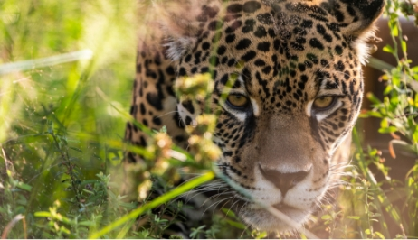

Yaguareté
El yaguareté (Panthera onca) es el mayor felino de América y uno de los mamíferos más amenazados de Argentina. La especie se extinguió de la provincia de Corrientes a mediados del siglo XX debido a la cacería, la modificación del ambiente y la pérdida de sus presas naturales.